dualSTAKE Overview
dualSTAKE is a family of liquid staking tokens on Algorand that convert protocol staking rewards from ALGO to ASAs.
Each dualSTAKE token pairs ALGO and an ASA into a dual liquid staking token:
gobtcALGOdualSTAKE =ALGO+goBTCcoopALGOdualSTAKE =ALGO+COOPcosgALGOdualSTAKE =ALGO+COSG- etc
dualSTAKE tokens are always at 1:1 rate with
ALGO, and accrue rewards in the form of an increasing exchange rate with the paired ASA.
In a nutshell:
- Users stake
X ALGO+Y ASA, receivingXdualSTAKE tokens. - dualSTAKE smart contracts participate in consensus.
- Consensus staking rewards are automatically swapped from
ALGOinto the paired ASA. - Users later redeem
XdualSTAKE tokens forXALGO, plusZ ASA. Assuming rewards have accrued since the user minted, theZquantity received will be higher than the initialYquantity deposited.
Why dualSTAKE?
Benefits for ASA creators:
- Leverage your community's
ALGOinto a steady stream of buying pressure for your ASA- Incentivize your dualSTAKE token with a permissionless ASA farm
- Run your dualSTAKE node for 4% node runner fees (paid in
ALGO) - Provide utility for your ASA via the implicit dualSTAKE token soft-lock
Benefits for users:
- Stake
ALGO+ ASA, accrue rewards in your favorite ASA - Benefit from dualSTAKE farms offering higher APR (where available)
Read more about how dualSTAKE works or navigate to a specific section using the menu.
How it Works
For the purposes of this section, we will use ORA as the paired dualSTAKE asset.
The ORA dualSTAKE token is called oraALGO.
- Each
oraALGOunit is backed byALGOat a rate of 1:1 - Each
oraALGOunit is backed by an increasing amount ofORA
oraALGO issuance is fully managed by a smart contract. Different tokens are managed by independent contracts, without co-mingling.
A typical user journey with a dualSTAKE token like oraALGO would consist of:
- minting dualSTAKE (e.g.
oraALGO) by depositingALGO+ORA - (later on) redeeming their
oraALGOdualSTAKE tokens forALGO+ moreORA.
Between points 1 and 2, the dualSTAKE contract would receive staking rewards from block production, which are immediately swapped into the paired ASA, increasing the ORA amount backing each unit of oraALGO. The amount of staked ALGO remains constant.
dualSTAKE supports farms, which pay out an additional amount in the paired ASA for each block produced, resulting in a higher APR. Farms are permissionless and can be created or extended by anyone.
Read more about minting or navigate to a specific section using the menu.
Minting
Users stake in a dualSTAKE contract by minting dualSTAKE tokens. This requires depositing ALGO and some of the paired ASA into the dualSTAKE smart contract.
Using coopALGO as an example, a user would mint by depositing:
ALGOat a fixed 1:1 rateCOOPat the current exchange rate
In return, they receive an equal amount of coopALGO tokens to the ALGO they deposited.
Minting does not incur any platform fees.
E.g. If coopALGO is at 10:1 with COOP, the user would deposit 10 ALGO + 1 COOP to receive 10 coopALGO tokens.

Not sure what this is all about? Start over from the overview page.
Continue to: "Where does the yield come from?" or navigate to a specific section using the menu.
Staking Rewards
Where does the yield come from? Short answer: Algorand staking rewards, converted to your favorite ASA permissionlessly. Additional rewards can accrue from our permissionless dualSTAKE farms.
A dualSTAKE smart contract delegates its escrow account's voting power to a node runner, in order for them to participate in consensus on its behalf.
As blocks are proposed by the node:
- The Algorand protocol distributes
ALGOrewards into the smart contract escrow account - The
ALGOrewards are swapped into the ASA (e.g.ORA) through a pre-configured AMM pool (e.g. Tinyman v2ALGO/ORA) - Each circulating dualSTAKE token (e.g.
oraALGO) is now worth more in the paired ASA (e.g.ORA)
These swaps create buying pressure on the paired token, and serve as a steady cost averaging buy strategy for users.
Platform and node runner fees are taken from the staking rewards, pre-swap.
Swapping is triggered in one of two ways:
- Our backend systems will call the contract to perform the
ALGO-ASAswap whenever a block is produced - Or, automatically before minting or redeeming dualSTAKE tokens
This way, even if our backend systems lag behind or are offline, you can be sure that the dualSTAKE exchange rate is correct.
Continue to: Redeeming dualSTAKE tokens or navigate to a specific section using the menu.
Redeeming
Users can redeem their dualSTAKE tokens at any time. Redeeming breaks dualSTAKE up into their component ALGO+ASA parts and returns them to the user.
Using oraALGO as an example:
Users can redeem their oraALGO tokens via the smart contract and receive the backing ALGO (at 1:1) and ORA (at current rate).
Assuming staking rewards have accumulated between minting and redeeming, the ORA amount withdrawn during redemption will be larger than the deposited amount during mint.
E.g. Alice minted 100 oraALGO by depositing 100 ALGO and 1 ORA. Some time later, oraALGO has appreciated against ORA, so she redeems her 100 oraALGO tokens for 100 ALGO, plus 3.14 ORA.

Not sure what this is all about? Start over from the overview page.
Minting and redeeming do not incur platform fees, so users should always receive at least as much ALGO and ORA as they deposited.
Continue to: "Protesting" or navigate to a specific section using the menu.
Protesting upgrades
dualSTAKE contracts support smart contract code upgrades under certain guardrails.
The intent behind upgradability is to evolve dualSTAKE with more features, such as support for new AMMs, multiple node runners, etc.
Code upgrades can change the rules of the system, as well as set funds in jeopardy. For this reason, code upgrades are time-delayed by 1 week, and the Myth Finance team will present the upgraded code in advance. The integrity of the (scheduled) upgrade will be guaranteed via cryptographic hashes - which means that we will be bound to upgrade only to the version we present.
As a user, you can protest a scheduled upgrade with your dualSTAKE tokens:
"Protesting" enables users to signal that a scheduled upgrade is a deal-breaker for them.
Protesting stake is locked up on the dualSTAKE contract in order to soft-block the upgrade.
For the upgrade to proceed, protesting stake must first be returned to users in ALGO+ASA form ("dissolved")
How it works
Users wishing to protest a proposed upgrade can do so by locking up their dualSTAKE tokens on the contract.
Before a smart contract upgrade can take place, all protesting user tokens must be "dissolved", i.e. redeemed and returned to the protesting users in ALGO+ASA form.
Protesting stake dissolution takes place before the upgrade and is enforced by the smart contract code. When dissolving protesting stake, funds flow from the contract directly to the user, without intermediation by the platform operator.
An upgrade can not take place unless:
- 1 week has elapsed since it was scheduled
- All protesting stake has been dissolved, i.e. redeemed and returned to protesting users
If enough stake is locked up as protesting, the platform operator may choose to cancel a planned upgrade, in which case the protesting stake will be sent back to users in dualSTAKE form, e.g. oraALGO.
Note: if protesting users have opted out of the dualSTAKE asset, or the paired asset, these will be delivered to their ARC-59 asset inbox.
Sunsetting dualSTAKE tokens
dualSTAKE tokens that fall below 30,000 ALGO balance for a prolonged period of time may become sunset.
This feature enables Myth Finance to "clean up" dualSTAKE tokens that have no traction, while letting holders redeem their deposited ALGO.
Sunsetting criteria:
- dualSTAKE token remains under rewards eligibility balance (30,000 ALGO) for the majority of a consecutive 4 week period.
Sunsetting a dualSTAKE token:
- disables any further minting of the dualSTAKE.
- hides the token from the main dualSTAKE listings page.
Users will be able to redeem their dualSTAKE tokens for as long as there are any in circulation.
You can navigate to a sunsetting dualSTAKE page in a number of ways:
- Select
Show Sunset Tokensat the bottom of the dualSTAKE listings page, or - Visit the sunset dualSTAKE page directly, or
- Visit their page directly, e.g. https://myth.finance/dualSTAKE/xyzALGO, or
- Visit their asset URL, e.g. https://myth.finance/asset/1234
Rate
dualSTAKE tokens are backed by ALGO and their paired asset, with a different exchange rate for each.
Minting dualSTAKE tokens will require the equivalent amounts of both tokens, and similarly redeeming will yield the equivalent amounts of both tokens.
The formula to determine the exchange rate of the dualSTAKE token to the paired assets is:
\[1\ dsALGO=1\ ALGO+\frac{Paired\ ASA\ Balance}{Staked\ ALGO}ASA\]
Where:
dsALGOrefers to a specific dualSTAKE token, e.g.oraALGOPaired ASA Balancerefers to the amount of the paired ASA held by the smart contract, e.g. 300ORAStaked ALGOrefers to theALGOdeposited by users- Not including accumulated platform or node runner fees
⚠ If you are integrating dualSTAKE rate calculations into your platform, make sure to account for asset decimals.
Example
Assuming the oraALGO dualSTAKE contract has:
- 30,000
ALGOstaked - 10,000
ORAbalance
Then:
\[1\ oraALGO=1\ ALGO+\frac{1}{3}ORA\]
Initial ASA exchange rate
Usually, the initial dualSTAKE:ASA exchange rate will be zero, but in some cases a community intending to provide a generous farm may choose to bootstrap a dualSTAKE token with a non-zero exchange rate for their ASA.
This would impose a requirement to deposit some of the asset when minting the dualSTAKE token "at time zero", before rewards have started accumulating.
Fee Structure
Minting & redeeming do not incur any platform fees. The only fees you will be charged during these operations are network transaction fees.
Instead, fees are taken from consensus rewards, before they are swapped to the ASA.
The reward fees consist of platform fees and node runner fees:
Platform fees
The Myth Finance platform is allocated some fees on each rewards distribution.
The percentage is configurable throughout the lifetime of the contract, and can be seen under the global storage key platform_fee_bps. This value is basis points, so you can divide by 100 to get the percent fee. The initial value 300 corresponds to 3.0%.
There are mechanisms in place to protects dualSTAKE users from the operator changing platform fees abruptly, see Immutability - Fee Rate.
Node runner fees
The node operator is allocated some fees on each rewards distribution. As above, this is expressed in basis points under the noderunner_fee_bps global storage field, and the same update mechanism applies.
The default node runner fee will be 400 bps, or 4%.
Typically, ASA communities will operate their own nodes, and benefit from these fees. You can read more about node running in this section.
Example fee allocation from reward disbursement
Assuming these hypothetical fees:
- Platform fee rate: 3.0%
- Node operator fee rate: 4.0%
Then a staking reward disbursement of 10.5 ALGO would be allocated as such:
- Staking rewards deposited: 10.5
ALGO - Platform fee: 0.315
ALGO - Node operator fee: 0.42
ALGO - Net amount to be swapped into ASA: 9.765
ALGO
Withdraw model
Platform and node operator fees are not paid immediately. Instead they remain in the contract escrow account until they are withdrawn by the respective operator.
This serves multiple purposes:
- fewer required transaction fees
- contributing to the voting power of the dualSTAKE escrow address in consensus
- fewer taxable events for the platform and node runners
Creating dualSTAKE contracts
Currently, creating dualSTAKE contracts is a manual process.
If you are interested in launching a dualSTAKE for your ASA, read this page carefully. You can find a link to the dualSTAKE creation form at the end of this page.
Eligibility
For assets to be suitable for dualSTAKE, they must:
- have an ALGO liquidity pool on Tinyman, with at least 25K ALGO total TVL
- have at least 6 decimal place precision
Minimum Stake
Note: if your dualSTAKE contract falls below 30,000 ALGO balance, you will still be able to mint and redeem normally.
Tip: Before launching a dualSTAKE, we recommend checking with your community to see if there is enough interest to reach this minimum.
Creation Fee
A one-time creation fee of 20 USDC is required to create dualSTAKE systems. The payment address will be provided when we are ready to create your dualSTAKE.
Decisions
If this all sounds good, you can fill out the form at the bottom to get started. You will be asked to make these decisions:
1. dualSTAKE Asset name
The dualSTAKE asset name is usually a straightforward affair: Your token name in lowercase, followed by ALGO. Some examples: coopALGO - oraALGO - monkoALGO
The asset name length should not exceed 10 characters. E.g. marcusALGO is at the limit.
2. dualSTAKE Asset Unit name
The unit name is the name of a unit of your dualSTAKE asset. It is usually displayed on wallet balances, transactions, etc. Algorand only allows unit names up to 8 characters long.
dualSTAKE unit naming convention is to choose 4 characters in lowercase, followed by ALGO.
If your asset name is longer than 4 characters, you must find a suitable abbreviation. Some examples of abbreviated dualSTAKE unit names:
- goBTC dualSTAKE unit name is
gbtcALGO - monko dualSTAKE unit name is
mnkoALGO
3. Initial rate
You will be asked whether you want your dualSTAKE token to launch with an initial ASA requirement or not (zero rate.)
Scenario A: Zero rate. dualSTAKE tokens can start at a zero dualSTAKE-to-ASA exchange rate. In this scenario, there would not be an initial requirement of your ASA in order to mint your dualSTAKE token. The ASA requirement would instead start rising slowly as rewards accumulate and are swapped into your token.
Scenario B: ASA requirement. If desired, dualSTAKE tokens can be bootstrapped with an initial ASA requirement. In this scenario, some of your ASA would be required in order to mint your dualSTAKE token. This is recommended in case you intend to provide a generous farm, which would justify the "soft-lock" of your ASA. We recommend keeping the ASA requirement reasonable - such as 2% to 5% - so as not to disqualify users who may otherwise be willing to stake.
Setting an ASA requirement will:
+ Soft-lock your ASA into the system earlier.
- Disqualify users who do not have enough ASA balance to match their intended ALGO stake.
4. Node running
If you or someone from your community can run your dualSTAKE node, you should! Otherwise, a node runner will be found for you by the Myth Finance team.
Why run the node? Node runners retain 4% of ALGO rewards paid by the protocol as fees.
If you opt to run your own node, you will be asked to provide an account that will have special permissions to perform node-related operations. Read more about running a dualSTAKE node here.
Complete the form
Sound good? Fill out the dualSTAKE creation form
Next Steps
After filling in the form, we will check everything and get in touch about any additional info needed.
We typically handle your dualSTAKE logo creation, creating the contracts, and Pera verification submission for your dualSTAKE asset.
Farm provision
dualSTAKE farms offer your users a higher overall APR in return for choosing to stake on your dualSTAKE token over other appealing liquid staking options in the ecosystem.
dualSTAKE farms can be configured to pay out an extra amount of the paired ASA for each block produced by dualSTAKE contracts.
Farms are permissionless, immutable and extendable:
- anyone can set them up
- once set up, farms can not be cancelled
- anyone can extend an existing farm by contributing more ASA
Farms complete the synergy between your ASA and its dualSTAKE form. Read about the benefits of providing farms below.
Note: Farms only support the paired ASA of each dualSTAKE contract, e.g. gobtcALGO farms are only compatible with goBTC.
Farming benefits
As an ASA creator or community, dualSTAKE farms allow you to utilize your ASA treasury into a buying pressure incentive.
- increase the APR of your dualSTAKE token, making it more competitive and appealing to users.
- more ALGO locked ➡ more frequent blocks produced ➡ stronger buying pressure.
- provide additional soft-lock utility to your ASA via dualSTAKE
Offering a higher APR compared to competing staking options will incentivize your users to stake their ALGO on your community's dualSTAKE token. More ALGO staked means more blocks produced, which results in more frequent swaps, producing stronger buying pressure on your ASA.
As rewards accumulate and are swapped, the exchange rate of the dualSTAKE token to the ASA increases globally for all holders, current and future. As a secondary benefit, minting new dualSTAKE tokens will require more of the ASA as time moves on, which provides a soft-lock utility for tokens making use of this system.
Create a farm
To create a farm for any dualSTAKE token, navigate to its page and locate the farm panel.
If there is no existing farm, you will see a panel like the one shown below.
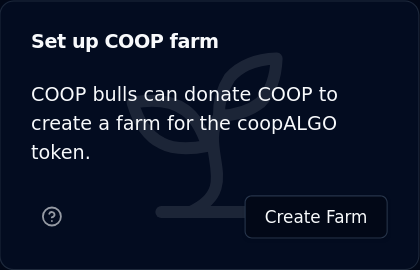
Click through Create Farm to begin. You will see a form like this:
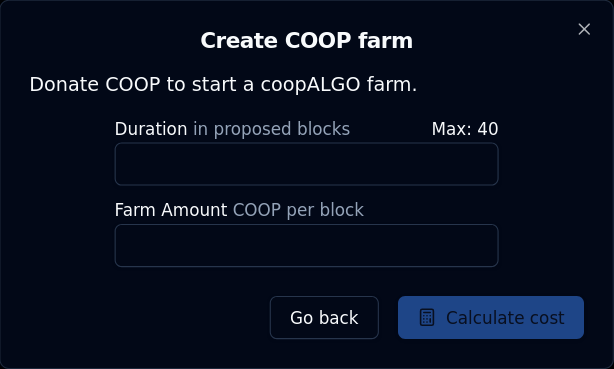
Fill in your desired duration and amount per block:
- Duration is expressed in blocks produced by your dualSTAKE node.
- Duration does not affect the displayed APR calculations
- The maximum duration for a farm is dependent on the amount of ALGO staked. It will roughly correspond to the expected block production over a period of 45 days (with a floor duration of 30 blocks.)
- Farm amount is the amount of your ASA that will be added into dualSTAKE with each block produced
- This does affect the displayed APR calculations
Click Calculate cost to show the total cost and projected APR impact.
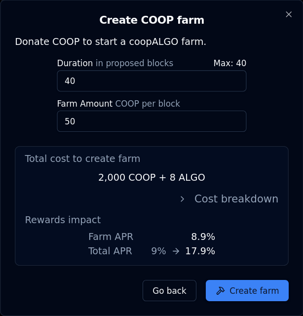
When you are satisfied with your parameters, click Create farm to complete the process.
ALGO cost breakdown
Aside from the ASA payments, there are additional ALGO costs to creating a farm, or extending the duration of an existing farm.
You can click > Cost breakdown to expand a drill-down into the farm creation costs:
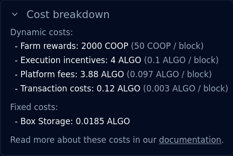
This adds up to a total cost of 0.2 ALGO per block (duration):
- 0.1 ALGO per block is used to incentivize execution of the farms.
- dualSTAKE farms are an open system, with a published SDK. Anyone can call the farm contracts to initiate a payout, which is rewarded with 0.1 ALGO as an execution incentive.
- 0.097 ALGO per block is paid as a platform fee.
- 0.003 ALGO per block is used to cover inner transaction fees by the farm contract.
Some additional fixed costs may apply depending on the inner state of the contract:
- 0.1 ALGO ASA Opt-in fee
- 0.0185 ALGO On-chain (box) storage fee
Extend farms
When a farm is already set up, anyone can extend its duration or amount. To do so, locate the farm panel:

Then click View Details:
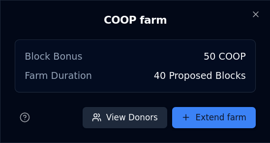
Then click + Extend Farm:
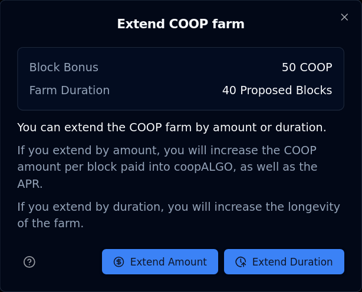
From here, you can access the forms to extend a farm by amount (paid per block) or duration (in blocks produced)
Extend Farm Amount
Extending the farm's amount paid per block will increase the overall APR of your dualSTAKE. This should make it more appealing to your community to stake, resulting in more ALGO, more frequent blocks produced, and more buying pressure.
From the panel at the end of the previous section, click Extend Amount to access this form:
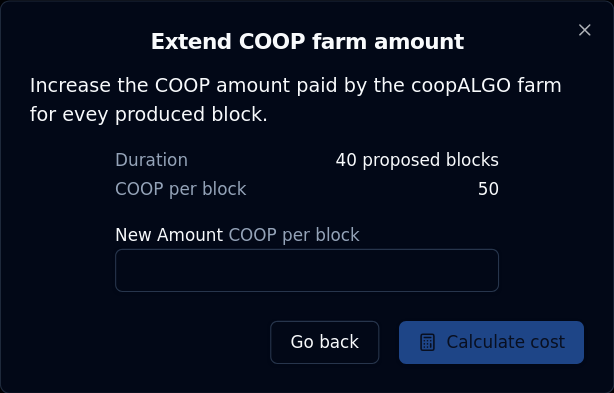
From here you can increase the farm amount per block paid out by the farm.
Fill in your desired amount and click Calculate cost.
You will see the total cost of your operation, as well as the impact to the APR:
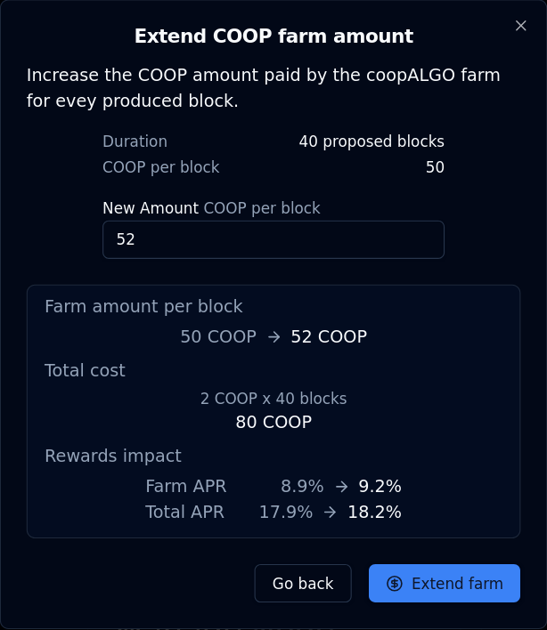
When you are satisfied with your parameters, click Extend farm to complete your operation.
Extend Farm Duration
Extending the farm duration increases its longevity. Note: the APR calculations shown on the site are "spot" calculations, so the farm durations are not taken into account.
From the panel at the end of the Extend farms section, you can click Extend Duration to access this form:
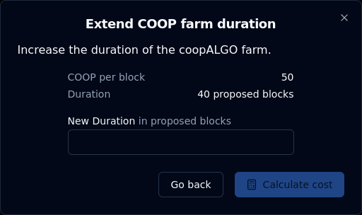
Fill in your desired duration and click Calculate cost:
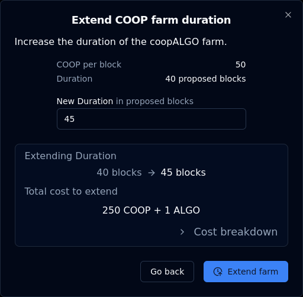
You can click > Cost breakdown to drill down into the ASA and ALGO costs of this operation. These costs are documented here.
When you are satisfied with your parameters, click Extend farm to complete your operation.
Running a dualSTAKE node
dualSTAKE contracts currently operate with a single escrow account. A node runner is appointed to participate on behalf of dualSTAKE by the ASA leadership or Myth Finance.
ASA communities are expected to operate their nodes and reap the additional rewards:
Node runners accrue fees from rewards, in ALGO. Fees can withdrawn at any time. The default node runner fee is 4%, though this can be configured under the protocol safeguards.
The node runner account can:
- change the participation keys of the contract, as well as the online/offline state.
- change the node runner account to another address
- withdraw accrued node runner fees
The "fee admin" role held by Myth Finance can also perform these actions.
How to run a dualSTAKE node
This section will walk you through (1) Generating participation keys, (2) registering them through the website, and (3) setting up Allo Alerts monitoring.
When you connect the node runner account and visit your dualSTAKE token page, you will see the Manage Node panel:
Note: you need to be allocated the node runner role by the Myth Finance team before you can perform these tasks.
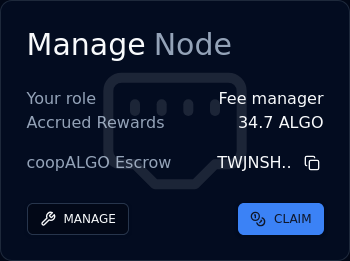
1. Generate participation keys
First, you need to create participation keys for the dualSTAKE escrow account on your node.
Copy the address using the Copy button next to the xyzALGO escrow address (e.g. TWJN.. above).
Create participation keys for this account on your node.
Recommended duration: at least 3,000,000 rounds (approximately 90 days.)
2. Register the keys
In the Manage Node panel, click MANAGE, then Key Registration, then Online. You will see a form like the one shown below.
Copy the participation key information from your node carefully and double-check the values. Note: The "Voting key" field may be called "Vote key" on your node.
Click Register Online and sign the transaction.
Note: The first time you register a dualSTAKE account online will require a 2 ALGO fee for protocol rewards eligibility.
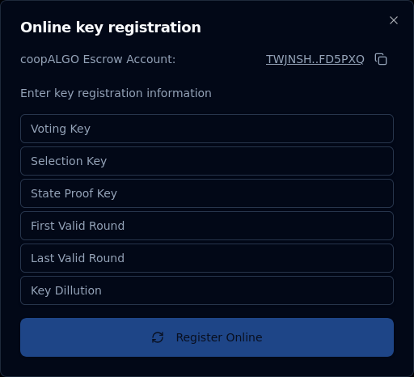
That is all: your node should now be participating on behalf of the dualSTAKE escrow account.
Note: The consensus online status on the dualSTAKE pages will take up to 15 minutes to update. Do not be concerned if it does not update to ONLINE immediately.
3. Monitor your node
We strongly recommend setting up an Allo Alerts account. This free service provided by Nodely will notify you of important node events, like degraded voting performance, upcoming key expiration, etc.
- Create a free account on alerts.allo.info using your email address.
- Navigate to
Monitoring->Add new - Enter the dualSTAKE escrow address that you generated participation keys for
- Label it with the dualSTAKE name, e.g.
coopALGOand clickSAVE - Click
Add Triggerand add theVoting Performancetrigger - Click
Add Triggerand add theKey Expirationtrigger - Click
Add Triggerand add theOnline/Offline Statustrigger
You should now receive notifications via email when any of these alarms are triggered.
Renew participation keys
Your participation keys will eventually expire. If you have set up Allo alerts (see above), you will be notified about this event about a week before it takes place.
To renew your participation keys, follow the key registration procedure above: generate new participation keys and register them online.
Claim your node runner rewards
In the Manage Node panel, you can click the CLAIM button to withdraw your accrued node runner fees.
Transfer the node runner role
If you want to transfer the node runner role to another account, you can do so through the Manage Node panel.
Click Manage, then Transfer Noderunner Role and fill in the address you want to set as the node runner.
Note: before you can transfer the node runner role, you need to withdraw any accrued node runner fees.
Immutability
Smart contract code
Smart contract code is upgradable with a 1 week time-lock.
The hashes of the proposed code upgrade will be published in advance for review by the community, along with the contract source code that produces them.
The smart contract will only accept a code upgrade that matches the published hashes (stored in the contracts' global storage) after the time lock elapses.
Users who do not agree with the contract upgrade can redeem their dualSTAKE tokens immediately, but they can also signal their disagreement without exiting the system by "protesting" with their stake.
Technical details
Scheduled contract upgrades can be seen in the global storage variable contract_upgrade, which has the following structure:
0: [4 bytes] timestamp_applicable uint32
4: [32 bytes] approval_page_1_hash bytes
36: [32 bytes] approval_page_2_hash bytes
dualSTAKE smart contract code may exceed 4KB, which is the largest value that can be hashed in the AVM. For this reason, the program is hashed in 4KB "pages". When an upgrade takes effect, each 4KB-sized program page is hashed with SHA512/256 and compared against the stored hash in the contract_upgrade storage value. The upgrade is only allowed to take effect if all hashes match.
Code-to-hash Verification
For transparency, dualSTAKE contracts are built and hashed in a public Github workflow called Build and hash.
The Build contract step will compile the pyteal to teal (artifacts/approval.teal), and then to AVM bytecode (artifacts/approval.teal.tok), and then hash the bytecode's 4K pages (artifacts/hashes/approval.teal.tok.page1.sha512-256 and artifacts/hashes/approval.teal.tok.page1.sha512-256.) These are then committed to the repository and tagged with the aforementioned hashes.
The 4KB program hashes in the approval.teal.tok.pageX.sha512-256 files, as well as the output of the workflow action, should match the hashes in the smart conrtact storage as described above.
In the interest of transparency, it should be noted that the built artifacts (including hashes) that are committed to the repo are not tamper-proof, as an admin could imitate the Github CI user/email and force push to overwrite. However, the workflow action logs are not possible to spoof without tampering with the committed build files. A stronger solution would make use of Github Artifact attestations, but they do not support the SHA512-256 algorithm currently required by the dualSTAKE upgrade process.
Independent reproduction of the artifacts and hashes is possible by cloning the repo locally and running pip install -r requirements.txt and ./build-and-hash.sh at the root.
Fee Configuration
Platform and node runner fees are configurable. Fee increases are time-delayed, whereas fee decreases take effect immediately.
The "fee admin" role, controller by the Myth Finance team, will be able to increase the fee rates:
- with a time delay of 1 week before effect
- with a maximum change of +2.5% from the previous value
This protects dualSTAKE holders from the Myth Finance team being able to immediately change the fee rate to 100%, which would compromise their rewards.
Platform and Node operator Fee Rates
Aside from the Myth Finance frontend, fee rates and parameters can be found in dualSTAKE contracts' global state variables.
- Platform fee rate value:
platform_fee_bps(in basis points) - Node runner fee rate value:
noderunner_fee_bps(in basis points) - Maximum change:
fee_update_max_delta(in basis points, as % change) - Time-delay duration for fee increases:
fee_update_period(in seconds)
Changing scheduled updates
If an update is issued while a previous update is scheduled, the timer will reset.
Updates can also be staggered, e.g. the platform fee rate and the node runner fee rate values can be part of the same update.
The update will be applied automatically after the update timestamp elapses, either explicitly by a platform operator, or when the contract is first called to mint or redeem by any user.
Scheduled updates will be stored as in the next_params_update global storage value.
The structure of this field is:
0: [8 bytes] timestamp_applicable uint64
8: [8 bytes] node_runner_fee_rate uint64
16: [8 bytes] platform_fee_rate uint64
Immediately updatable parameters
Admin role account
The admin address admin will be mutable by the admin role with immediate effect. Changing admin requires two transactions in an atomic group, one from the current admin and one from the future admin. This aims to eliminate the possibility of operator error.
Fee admin
The fee admin address fee_admin will be mutable by the admin and fee_admin roles with immediate effect.
Node runner
The node runner address noderunner will be mutable by the noderunner and fee_admin roles with immediate effect.
Changing the node runner address requires withdrawing node runner fees. This prevents the fee admin role from subverting the node runner fees.
Fee Decreases
Fees can be decreased immediately as described above.
Roles
The dualSTAKE smart contract has a number of privileged roles that can perform authorized actions:
Admin
A high security account, i.e. hardware wallet or multisig controlled by the Myth Finance team.
Can perform the following actions:
- Schedule a smart contract upgrade
- Execute vested smart contract upgrade (shared with
fee adminrole) - Cancel smart contract upgrade (shared with the
fee adminrole) - Change
adminrole address - Change
fee adminrole address (shared with thefee adminrole)
Fee Admin
A lower-security account controlled by the core team.
Can perform the following actions:
- Execute vested smart contract upgrade (shared with
adminrole) - Cancel smart contract upgrade (shared with the
adminrole) - Change
fee adminrole address (shared with theadminrole) - Schedule fee update
- Cancel queued fee update
- Withdraw platform fees
- Withdraw node runner fees to node runner address (shared with
node runnerrole) - Perform keyreg online transaction (shared with
node runnerrole) - Perform keyreg offline transaction (shared with
node runnerrole) - Change node runner address (shared with
node runnerrole)- Condition: node runner fees must be fully withdrawn
- Dissolve protesting stake
- In order to execute a protested upgrade
- Return protesting stake
- After a protested upgrade is cancelled
Node runner
Account controlled by node runner. Used to withdraw fees and manage key registrations.
- Change node runner address (shared with
fee adminrole)- Condition: node runner fees must be fully withdrawn
- Withdraw node runner fees (shared with
fee adminrole) - Perform keyreg online transaction (shared with
fee adminrole) - Perform keyreg offline transaction (shared with
fee adminrole)
Transaction fees
Users pay for their own transaction fees, e.g. during minting and redeeming.
The smart contract pays for its own inner transaction fees when swapping (0.003 ALGO)
Node runners (or fee admins) pay for the key registration fees.
Contract Storage & Immutable parameters
TBD
Contract ABI
ARC 32 Spec of the dualSTAKE contract: contract.arc32.json
Typescript SDK
Developers can use the published Typescript SDK to interact with dualSTAKE contracts programmatically.
The SDK has complete support for all operations that the contracts support, including node runner, fee admin and admin operations.
Audit
We intend to obtain an informal audit of the smart contracts by experienced AVM developers.
The dualSTAKE smart contracts will be open sourced under a non-permissive license.
Bug bounty
The core dualSTAKE contract is under a bug bounty until at least June 30th, 2025.
Scope
In Scope: pyTEAL dualSTAKE contract commit 0cd8b28d8701d58486956ba748dee04f4ba2548b
Excluded from scope:
- ASA rounding losses due to decimal precision. Sub-microunit ASA "losses" while minting are possible. They are disregarded as: 1) uneconomical to the attacker, and 2) cheap to rectify by the team.
- Third party vulnerabilities, e.g. AMMs that are called from dualSTAKE.
Out of scope: Other Myth Finance contracts, SDKs, client code, backend, frontend, privileged private keys, third party code.
Eligibility
- Responsible, private disclosure to the designated security-contact email address.
- No public communications or exploitation.
- Practically exploitable vulnerabilities.
Disclose vulnerabilities to: security@myth.finance
Critical vulnerabilities
Max bounty: $5,000 USDC
- Loss of user stake (ALGO)
- Loss of paired ASA rewards (see scope exclusions)
- Takeover of admin role
- Unauthorized smart contract upgrade (from non-admin)
- Smart contract deletion with circulating dualSTAKE tokens
High vulnerabilities
Max bounty: $500 USDC
- Inability to mint/redeem/swap (excluded: maximum balance restrictions)
- Non-dissolvable protesting stake (code upgrade denial of service)
- Smart contract upgrade time lock bypass
- Smart contract approval program upgrade hash lock bypass
- Unauthorized takeover of fee admin account
- Unauthorized takeover of noderunner account
- Loss of accrued noderunner fees
- Subversion of noderunner fees by privileged account
- Unauthorized consensus key registration
Notes
The dualSTAKE protocol is documented here.
Vulnerabilities not described under "critical" or "high" will be accepted and examined ad-hoc.
The rule of thumb for a valid vulnerability is "practical damage, done to a party involved in the dualSTAKE contract".
Links
Protocol frontend mainnet (backup)
Documentation ⬅ You are here
For contact details see Contact
Contact
Email: info@myth.finance
Security contact: security@myth.finance PGP key available upon request.
Social Media
We are on X.com as @Myth_Finance. This is the primary place to get updates, and you can DM us for support.
Discord-wise, we are generously hosted on the premier user community for DeFi on Algorand, Dragon Fi. You can use this invite link which should take you to the Myth Finance > General Chat channel.
We are not on Telegram or Reddit as of yet.